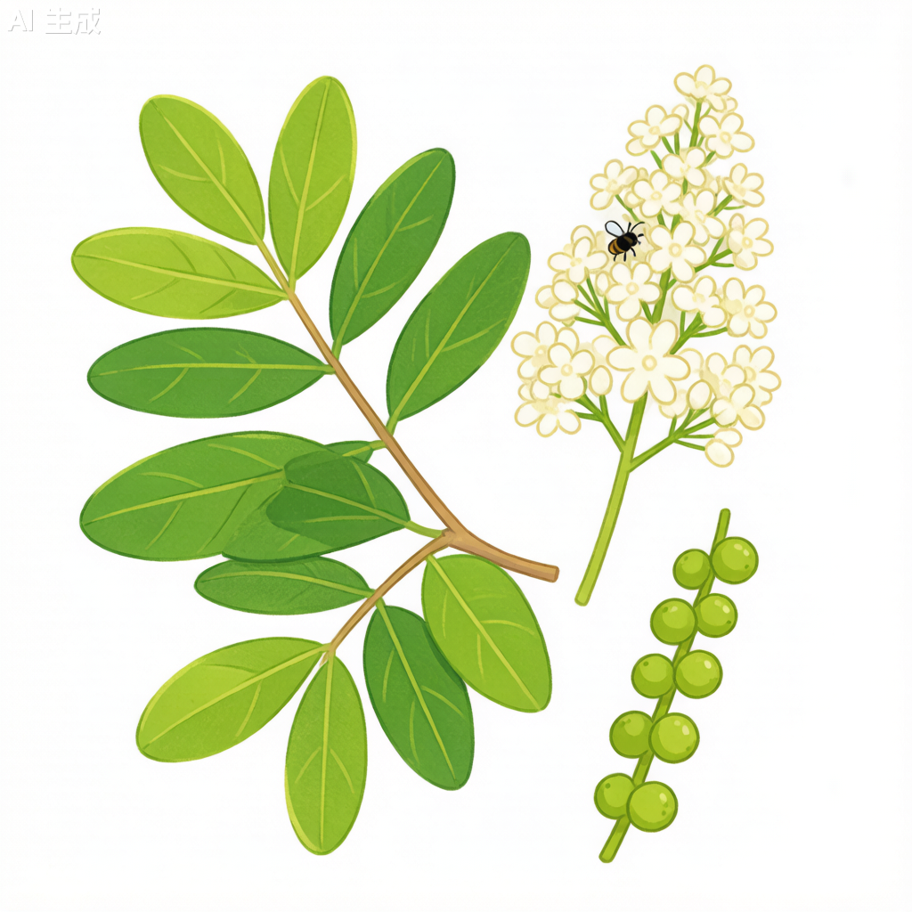

国槐 Styphnolobium japonicum

形态特征
国槐（Styphnolobium japonicum）为落叶乔木，高15–25米。树皮灰褐色，纵裂。奇数羽状复叶，小叶7–17枚，卵形或披针形，全缘，先端渐尖，基部圆形或宽楔形。圆锥花序顶生，花黄白色，蝶形花冠，旗瓣近圆形，翼瓣和龙骨瓣具短爪。荚果念珠状，肉质，不开裂，长2–8厘米，有1–6粒种子。种子肾形，黑褐色。花期7–8月，果期10–11月。国槐与刺槐（洋槐）的区别在于：国槐小叶先端渐尖、荚果念珠状肉质；刺槐小叶先端圆钝、荚果扁平开裂。
分布与生境
国槐原产中国，南北各省均有栽培，华北平原最为常见。喜光、深根性，耐寒、耐旱、耐盐碱，对土壤要求不严，在石灰性土壤和轻度盐碱土中均可生长。耐污染、抗风能力强，是城市行道树的优选树种。
分类学
国槐传统上归为蝶形花科（Papilionaceae）槐属（Sophora），学名Sophora japonica。但依据分子系统学（APG IV分类系统），槐属已重新划归为苦参属（Styphnolobium），科属为豆科（Fabaceae）苦参属（Styphnolobium），种加词"japonicum"意为"日本的"，源于早期西方植物学者通过日本标本的首次描述。国槐是华北地区重要的乡土树种，北京市将其选为市树。
生态习性
国槐为喜光阳性树种，幼树稍耐阴。深根性，主根发达，侧根较少，抗风能力强。对气候适应性强，耐寒、耐热、耐干旱、耐盐碱，在pH 7.5–8.5的钙质土壤中生长良好。生长速度中等偏慢，寿命长，可达数百年。国槐是优质的蜜源植物，花量大、花期长，为秋季重要的蜜源。其固氮根瘤能与根瘤菌共生，改良土壤结构。
利用与文化
国槐在中国文化中具有深厚的象征意义。槐树在古汉语中与"怀"通假，寓意怀乡思亲。古代科举考试常以"槐黄"指代考试年，故国槐也被视为"功名树"。国槐的花蕾（槐米）和花（槐花）是传统中药，有清热凉血、止血降压的功效。荚果（槐角）亦可入药。木材材质坚硬，富有韧性，耐水湿，可用于造船、家具和建筑。槐花可食，北方民间有食用槐花饼、槐花饭的传统。
参考文献
- 《中国植物志》第40卷: 75页. 科学出版社.
- 董云岚等. 国槐种质资源研究进展. 林业科学.
- 李保国. 2006. 中国槐文化考. 北京林业大学学报(社会科学版).